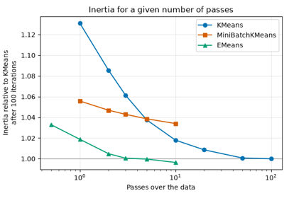

EMeans#
- class sklearn_emeans.EMeans(n_clusters=8, *, init='random', n_epochs=5, random_state=None)#
E-means clustering.
E-means is a mini-batch variant of K-means where each center is an exponential moving average (EMA) of the samples assigned to it. The EMA step size decreases along a cosine schedule, and clusters that receive too few samples are revived by splitting heavier ones. It typically gets close to the inertia of
KMeansin a few passes over the data (epochs) instead of tens of iterations.The batch size and the initial step size are given by scaling laws fitted by the authors, as functions of the number of samples, of clusters and of epochs, so that the number of epochs is the only parameter to choose.
The input can be dense or a sparse CSR matrix, in float32 or float64.
With
sklearn.set_config(array_api_dispatch=True), dense array API inputs (PyTorch tensors, CuPy arrays…) are fitted on their device, e.g. a GPU, and the fitted attributes are arrays of the same library on that device.- Parameters:
- n_clustersint, default=8
The number of clusters to form as well as the number of centroids to generate.
- init{‘random’, ‘k-means++’, ‘k-means||’}, callable or array-like of shape (n_clusters, n_features), default=’random’
Method for initialization:
‘random’: choose
n_clustersobservations (rows) at random from data for the initial centroids.‘k-means++’: greedy k-means++, as in
sklearn.cluster.kmeans_plusplus(). Mostly for experimenting: ‘k-means||’ gives a similar inertia much faster.‘k-means||’: scalable k-means++ [2]. A few rounds sample candidates with probabilities proportional to their squared distance to the candidates so far, then a weighted k-means++ on the candidates gives the initial centroids. It costs about as much as 2 to 3 epochs.
If an array is passed, it should be of shape (n_clusters, n_features) and gives the initial centers.
If a callable is passed, it should take arguments X, n_clusters and a random state and return an initialization.
- n_epochsfloat, default=5
Number of passes over the data. Fractional values are supported: when
n_epochs > 1, the fractional pass comes before the last epoch, which is always a full pass.- random_stateint, RandomState instance or None, default=None
Determines random number generation for centroid initialization, the order of the samples in each epoch and the revival of dead clusters. Use an int to make the randomness deterministic.
- Attributes:
- cluster_centers_ndarray of shape (n_clusters, n_features)
Coordinates of cluster centers.
- labels_ndarray of shape (n_samples,)
Labels of each point.
- inertia_float
Sum of squared distances of samples to their closest cluster center.
- batch_size_int
Size of the mini-batches, given by the scaling law of the authors. It grows almost linearly with the number of samples and is smaller when
n_features <= 16.- n_features_in_int
Number of features seen during fit.
- feature_names_in_ndarray of shape (
n_features_in_,) Names of features seen during fit. Defined only when
Xhas feature names that are all strings.
See also
sklearn.cluster.KMeansThe classic implementation of the clustering method based on the Lloyd’s algorithm.
sklearn.cluster.MiniBatchKMeansMini-batch K-means with per-center learning rates.
Notes
The algorithm is described in [1]. For each mini-batch of samples, each sample is assigned to its nearest center, then each center \(c_j\) is updated from the sum \(s_j\) and the number \(n_j\) of the samples assigned to it:
\[N_j \leftarrow (1 - \alpha) N_j + \alpha n_j, \qquad c_j \leftarrow \frac{(1 - \alpha) N_j c_j + \alpha s_j}{N_j'}\]where \(N_j'\) is the updated \(N_j\) and \(\alpha\) the step size. The final centers are the means of the samples assigned to each center during the last epoch.
labels_andinertia_are then computed with an extra pass over the data, so that they match the final centers.For array API inputs, the Cython kernels are replaced by array operations of the library of the input. The random numbers are drawn on the host in the same order, but the results are not identical since the rounding differs. On GPUs, two fits with the same
random_statecan also give different results. On devices without float64, the EMA weights and the sums of the last epoch are in float32. Withinit="k-means||", the final k-means++ on the candidates runs on the host, andinit="k-means++"copies the data to the host.References
[1]S. Bessa, P.-E. Mazaré, G. Szilvasy, H. Touvron, D. Picard, M. Douze and H. Jégou, “e-means: outperforming k-means (in one-tenth the epochs)”, 2026. arXiv:2611.09501
[2]B. Bahmani, B. Moseley, A. Vattani, R. Kumar and S. Vassilvitskii, “Scalable K-Means++”, Proceedings of the VLDB Endowment, 2012. arXiv:1203.6402
Examples
>>> from sklearn_emeans import EMeans >>> import numpy as np >>> X = np.array([[1, 2], [1, 4], [1, 0], ... [10, 2], [10, 4], [10, 0]]) >>> emeans = EMeans(n_clusters=2, random_state=0).fit(X) >>> emeans.labels_ array([0, 0, 0, 1, 1, 1], dtype=int32) >>> emeans.predict([[0, 0], [12, 3]]) array([0, 1], dtype=int32) >>> emeans.cluster_centers_ array([[ 1., 2.], [10., 2.]])
- fit(X, y=None)#
Compute e-means clustering.
- Parameters:
- X{array-like, sparse matrix} of shape (n_samples, n_features)
Training instances to cluster. It must be noted that the data will be converted to C ordering, which will cause a memory copy if the given data is not C-contiguous. If a sparse matrix is passed, a copy will be made if it’s not in CSR format.
- yIgnored
Not used, present here for API consistency by convention.
- Returns:
- selfobject
Fitted estimator.
- fit_predict(X, y=None, **kwargs)#
Perform clustering on
Xand returns cluster labels.- Parameters:
- Xarray-like of shape (n_samples, n_features)
Input data.
- yIgnored
Not used, present for API consistency by convention.
- **kwargsdict
Arguments to be passed to
fit.Added in version 1.4.
- Returns:
- labelsndarray of shape (n_samples,), dtype=np.int64
Cluster labels.
- fit_transform(X, y=None, **fit_params)#
Fit to data, then transform it.
Fits transformer to
Xandywith optional parametersfit_paramsand returns a transformed version ofX.- Parameters:
- Xarray-like of shape (n_samples, n_features)
Input samples.
- yarray-like of shape (n_samples,) or (n_samples, n_outputs), default=None
Target values (None for unsupervised transformations).
- **fit_paramsdict
Additional fit parameters. Pass only if the estimator accepts additional params in its
fitmethod.
- Returns:
- X_newndarray array of shape (n_samples, n_features_new)
Transformed array.
- get_feature_names_out(input_features=None)#
Get output feature names for transformation.
The feature names out will prefixed by the lowercased class name. For example, if the transformer outputs 3 features, then the feature names out are:
["class_name0", "class_name1", "class_name2"].- Parameters:
- input_featuresarray-like of str or None, default=None
Only used to validate feature names with the names seen in
fit.
- Returns:
- feature_names_outndarray of str objects
Transformed feature names.
- get_metadata_routing()#
Get metadata routing of this object.
Please check User Guide on how the routing mechanism works.
- Returns:
- routingMetadataRequest
A
MetadataRequestencapsulating routing information.
- get_params(deep=True)#
Get parameters for this estimator.
- Parameters:
- deepbool, default=True
If True, will return the parameters for this estimator and contained subobjects that are estimators.
- Returns:
- paramsdict
Parameter names mapped to their values.
- predict(X)#
Predict the closest cluster each sample in X belongs to.
- Parameters:
- X{array-like, sparse matrix} of shape (n_samples, n_features)
New data to predict.
- Returns:
- labelsndarray of shape (n_samples,)
Index of the cluster each sample belongs to.
- score(X, y=None)#
Opposite of the value of X on the K-means objective.
- Parameters:
- X{array-like, sparse matrix} of shape (n_samples, n_features)
New data.
- yIgnored
Not used, present here for API consistency by convention.
- Returns:
- scorefloat
Opposite of the value of X on the K-means objective.
- set_output(*, transform=None)#
Set output container.
Refer to the user guide for more details and Introducing the set_output API for an example on how to use the API.
- Parameters:
- transform{“default”, “pandas”, “polars”}, default=None
Configure output of
transformandfit_transform."default": Default output format of a transformer"pandas": DataFrame output"polars": Polars outputNone: Transform configuration is unchanged
Added in version 1.4:
"polars"option was added.
- Returns:
- selfestimator instance
Estimator instance.
- set_params(**params)#
Set the parameters of this estimator.
The method works on simple estimators as well as on nested objects (such as
Pipeline). The latter have parameters of the form<component>__<parameter>so that it’s possible to update each component of a nested object.- Parameters:
- **paramsdict
Estimator parameters.
- Returns:
- selfestimator instance
Estimator instance.
- transform(X)#
Transform X to a cluster-distance space.
In the new space, each dimension is the distance to the cluster centers.
- Parameters:
- X{array-like, sparse matrix} of shape (n_samples, n_features)
New data to transform.
- Returns:
- X_newndarray of shape (n_samples, n_clusters)
X transformed in the new space.
Examples using EMeans#

Comparison of EMeans with KMeans and MiniBatchKMeans